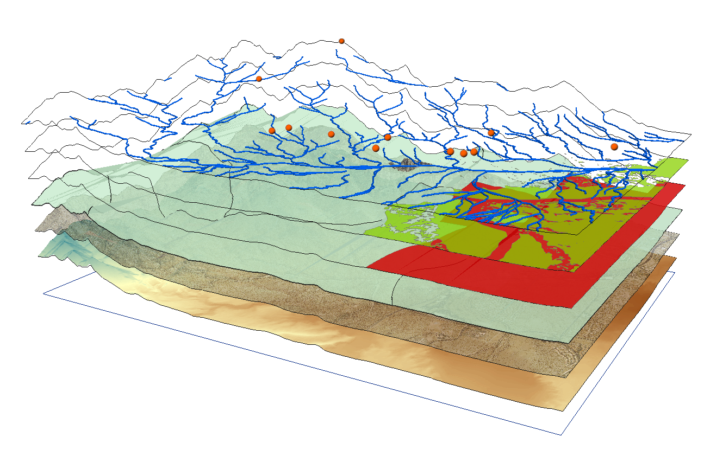

О нас
Лаборатория GeoX является центром передовых технологий в сферах ГИС и ДЗЗ.
С помощью современных методов работы со спутниковыми данными, наша лаборатория способна проводить детальный анализ географических областей, создавать точные карты и модели.Сферы деятельности нашей лаборатории:
- Работа с данными Геоинформационных систем
- Изучение и оптимизация процессов зондирования Земли
- Создание спутниковых фотоснимков, их анализ и обработка
- Хранение баз данных ГИС
Геоинформационные системы
Геоинформационные система (ГИС) - это компьютерные системы, анализирующие и отображающие географически связанную информацию.
Лаборатория GeoX тесно взаимодействует с системами ГИС и постоянно оптимизирует их работу.
Дистанционное зондирование земли
Дистанционное зондирование - это наука, позволяющая изучать Землю из космоса, обычно с помощью спутников или самолетов.
Наша лаборатория специализируется на зондировании в аграрных целях, используя для этого все доступные средства
Этапы нашей работы
Сбор данных
Высококачественные спутниковые системы лаборатории GeoX собирают тысячи снимков со всех уголков Земли
Векторизация данных

Векторизация подготавливает данные к анализу, что позволяет создавать точные и детализированные картографические представления реального мира
Глубокий анализ и хранение данных
Отдел Глубокого Анализа (ОГА) - важнейший элемент нашей лаборатории. На него возложен самый большой трафик данных